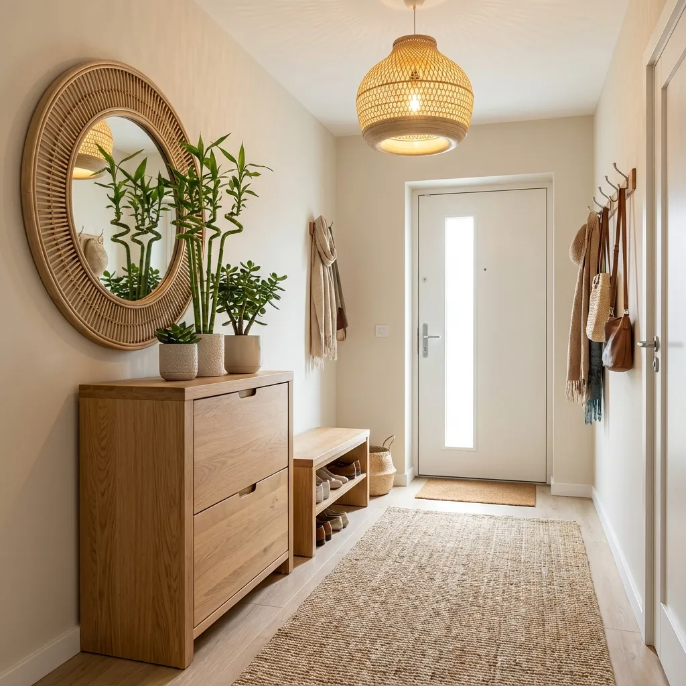

Why Your Entryway Matters in Feng Shui
Your entryway is the "mouth of chi" – the primary gateway through which energy enters your home. In feng shui, it's considered one of the most important areas because:
- 🚪 First impression for guests and opportunities
- ⚡ Main channel for positive energy flow
- 💰 Directly impacts wealth and prosperity
- 🏡 Sets the tone for your entire home
- 🌟 Influences career and social connections
A well-designed entryway welcomes abundance, while a cluttered or poorly arranged entrance blocks opportunities and positive energy.
📖 Table of Contents
Door Feng Shui: Your Gateway to Prosperity
Door Direction
The direction your front door faces significantly impacts your home's energy:
- South: Fame, recognition, passion (Fire element)
- Southeast: Wealth, abundance (Wood element)
- East: Health, family, new beginnings (Wood element)
- North: Career, opportunities (Water element)
- West: Children, creativity (Metal element)
- Northwest: Helpful people, travel (Metal element)
Door Color
Choose your door color based on direction:
- South-facing: Red, purple, orange (Fire colors)
- Southeast/East: Green, brown (Wood colors)
- North: Blue, black (Water colors)
- West/Northwest: White, gray, metallic (Metal colors)
- Southwest/Northeast: Yellow, beige, earth tones (Earth colors)
Door Size & Condition
- ✅ Proportional to house size (not too large or too small)
- ✅ Opens fully without obstruction
- ✅ Well-maintained (no squeaking, peeling paint)
- ✅ Clean and polished hardware
- ❌ Avoid broken or stuck doors (blocks opportunities)
Shoe Cabinet Placement
Ideal Position
- ✅ Side wall: Not directly facing the door
- ✅ Left or right: Either side works, choose based on space
- ✅ Closed cabinet: Hide shoes to keep energy clean
- ❌ Avoid: Directly opposite the entrance
Height Matters
Golden Rule: Shoe cabinet should not exceed eye level
- ✅ Waist to shoulder height is ideal
- ✅ Can double as a console table
- ❌ Too tall creates oppressive energy
- ❌ Too short looks unbalanced
Organization Tips
- Keep only current season shoes
- Maximum 5-7 pairs in entryway
- Store others in closet or bedroom
- Clean and air out shoes regularly
- Discard worn-out shoes (negative energy)
Mirror Rules for Entryway
The Golden Rule
NEVER place a mirror directly facing the front door!
This is one of the biggest feng shui mistakes. A mirror facing the door:
- ❌ Reflects positive energy back out
- ❌ Pushes away opportunities and wealth
- ❌ Creates unstable energy
Correct Mirror Placement
- ✅ Side wall: Perpendicular to the door
- ✅ Reflects beautiful view: Plants, artwork, or light
- ✅ Eye level: Positioned for easy use
- ✅ Round or oval: Softer energy than square
Mirror Benefits
When placed correctly, entryway mirrors:
- Expand the space visually
- Reflect light and brightness
- Allow last-minute appearance check
- Enhance positive energy flow
Welcoming Plants
Best Plants for Entryway
1. Lucky Bamboo 🎋
- Symbolism: Good fortune, flexibility
- Placement: Console table or floor
- Care: Grows in water, low light tolerant
2. Jade Plant 🪴
- Symbolism: Wealth, friendship
- Placement: Near door (but not blocking)
- Care: Succulent, minimal watering
3. Snake Plant 🗡️
- Symbolism: Protection, resilience
- Placement: Corner or side
- Care: Very low maintenance
4. Peace Lily ☮️
- Symbolism: Harmony, purification
- Placement: If you have natural light
- Care: Moderate light, keep moist
Plant Placement Tips
- ✅ Corners to soften sharp angles
- ✅ Pairs for balance (2 matching plants)
- ✅ Healthy and thriving only
- ❌ Never block the walkway
- ❌ Remove dead or dying plants immediately
Lighting Design
Importance of Good Lighting
Bright, welcoming light in your entryway:
- Attracts positive energy and opportunities
- Creates a warm first impression
- Enhances safety and security
- Lifts mood and energy
Lighting Options
Ceiling Light
- Chandelier: Elegant, creates focal point
- Pendant light: Modern, adjustable height
- Flush mount: Low ceiling solution
- Choose warm white (2700-3000K) for welcoming feel
Wall Sconces
- Flank the mirror or artwork
- Add ambient lighting
- Create symmetry and balance
Table Lamp
- On console table
- Adds warmth and coziness
- Decorative element
Natural Light
- ✅ Maximize with glass door or sidelights
- ✅ Use sheer curtains for privacy
- ✅ Keep windows clean
- ❌ Avoid heavy, dark curtains
Entryway Decor
Welcome Mat
- Color: Match door direction element
- Message: "Welcome" or positive words
- Size: Proportional to door
- Condition: Clean, no fraying
Artwork
- ✅ Uplifting, positive images
- ✅ Nature scenes, flowers, landscapes
- ✅ Symbols of prosperity (mountains, water)
- ❌ Avoid sad, violent, or dark imagery
Decorative Objects
- Bowl or tray: For keys, mail (keeps organized)
- Vase with fresh flowers: Living energy
- Crystals: Citrine for wealth, clear quartz for clarity
- Auspicious symbols: Fu dogs, laughing Buddha (if culturally appropriate)
Scent
- Essential oil diffuser (citrus, lavender)
- Fresh flowers
- Natural potpourri
- Avoid synthetic air fresheners
Storage & Organization
The Clutter-Free Rule
Your entryway should be the most organized space in your home!
What to Keep
- Current season shoes (5-7 pairs max)
- Frequently used jackets/coats
- Keys, wallet (designated spot)
- Umbrella stand
- Mail tray (process daily)
What to Remove
- ❌ Piles of shoes
- ❌ Stacks of mail/papers
- ❌ Broken items
- ❌ Trash bins (move to kitchen)
- ❌ Exercise equipment
- ❌ Anything you haven't used in 6 months
Daily Maintenance
- Put away shoes immediately
- Hang coats on hooks
- Process mail daily
- Sweep/vacuum weekly
- Wipe down surfaces
Common Entryway Feng Shui Mistakes
1. Mirror Facing the Door ❌
Problem: Reflects energy back out
Solution: Move to side wall or remove
2. Cluttered Entryway ❌
Problem: Blocks chi flow and opportunities
Solution: Declutter daily, minimal items only
3. Dark, Dim Lighting ❌
Problem: Depressing, unwelcoming energy
Solution: Add bright, warm lighting
4. Broken or Squeaky Door ❌
Problem: Signals neglect, blocks opportunities
Solution: Repair immediately, oil hinges
5. Shoe Mountain ❌
Problem: Dirty energy, chaos
Solution: Closed cabinet, limit to 5-7 pairs
6. Direct View to Bathroom ❌
Problem: Wealth "flushed away"
Solution: Keep bathroom door closed, add curtain or screen
7. Stairs Facing the Door ❌
Problem: Energy rushes out
Solution: Place plant or screen between door and stairs
Your Entryway Feng Shui Checklist
- ✅ Door in good condition, opens fully
- ✅ Door color matches direction
- ✅ Shoe cabinet on side wall, not facing door
- ✅ Mirror on side wall (if used), not facing door
- ✅ Healthy plant(s) in corners
- ✅ Bright, welcoming lighting
- ✅ Clean welcome mat
- ✅ Minimal, organized storage
- ✅ Fresh, pleasant scent
- ✅ Clutter-free, clean daily
- ✅ Positive, uplifting decor
📚 Related Feng Shui Guides
- Mirror Feng Shui Guide - Important mirror rules for your entryway
- 15 Best Feng Shui Plants - Perfect plants for welcoming energy
- Living Room Feng Shui - Continue optimizing your home
- 2026 Fire Horse Planning Guide - Complete yearly feng shui for $9.99
❓ Frequently Asked Questions
NO - this is one of the biggest feng shui taboos! A mirror directly facing the front door reflects positive energy (chi) back out, pushing away opportunities and wealth. Place mirrors on side walls instead, where they can reflect beautiful views or light. Learn more in our Mirror Feng Shui Guide.
Use a closed shoe cabinet on a side wall (not directly facing the door). Keep it at waist-to-shoulder height - never above eye level. Store only 5-7 pairs of current season shoes. Avoid shoe piles on the floor as they create chaotic, dirty energy.
Lucky Bamboo (good fortune), Jade Plant (wealth), Snake Plant (protection), and Peace Lily (harmony) are excellent choices. Place them in corners to soften angles. Use pairs for balance. Ensure they're healthy - remove dead plants immediately. See our complete plant guide for care tips.
Match the color to your door's facing direction: South/Southeast = Red, Orange, Purple (Fire). East = Green, Brown (Wood). North = Blue, Black (Water). West/Northwest = White, Gray, Metallic (Metal). Southwest/Northeast = Yellow, Earth tones (Earth). When in doubt, red is universally auspicious in feng shui.
In small entryways: 1) Keep clutter to absolute minimum, 2) Use a small console table instead of a large cabinet, 3) Add a mirror on a side wall to visually expand the space, 4) Use bright lighting, 5) Choose a slim shoe cabinet, 6) Hang coats in a nearby closet. The key is making the space feel open and bright.
🎁 Want a Complete Home Feng Shui Guide?
Download my FREE Feng Shui Guide with room-by-room checklists!
Get Your Free Guide